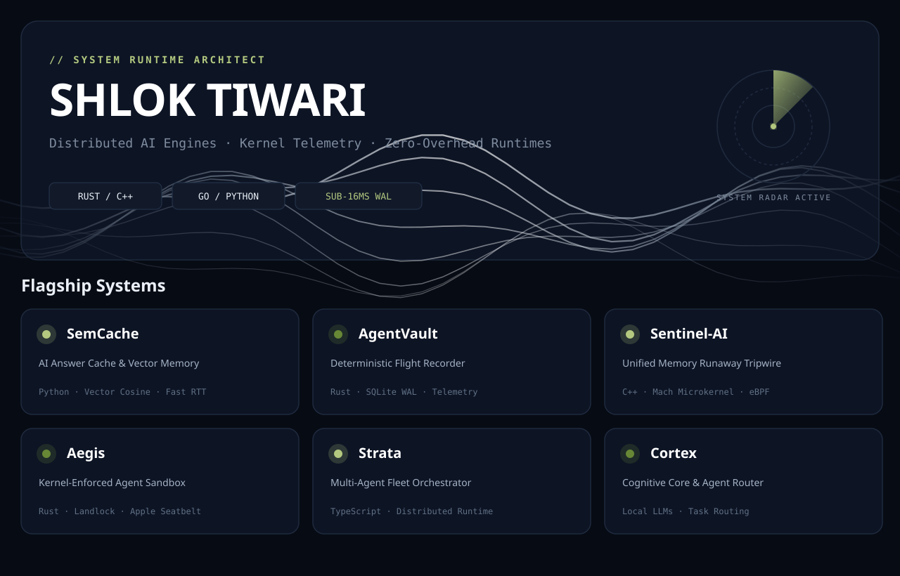
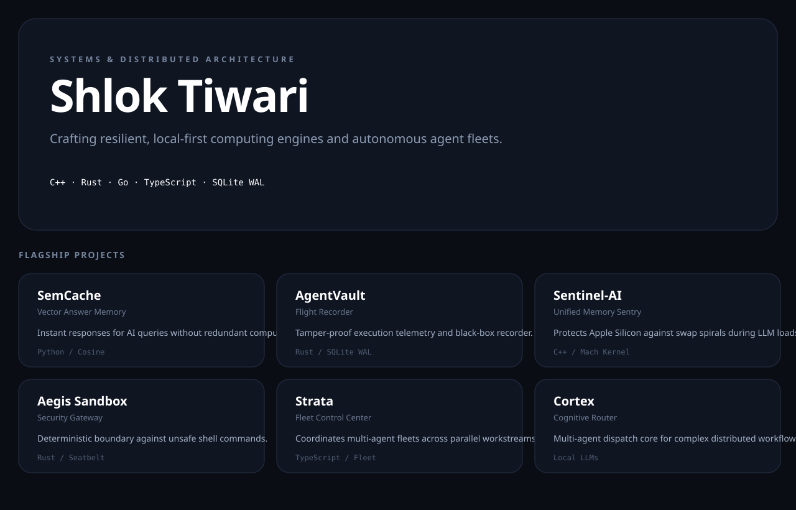

Compare all 4 standalone aesthetic directions below. Pick your favorite or mix and match elements.
Midnight Navy (#070B14), undulating fluid chrome ribbons, live neon olive radar sweep, and clean modular project cards. Bold, energetic, and highly dynamic.

Raw technical engineering blueprint. Swiss Hazard Amber (#FFC32A) accents, declassified monochrome blueprint grid, stark typographical contrast, and sharp status telemetry.

Tactical CLI mainframe. Phosphor emerald green (#00FF9D), pulsing oscilloscope waveform telemetry, CRT aesthetic, and real kernel diagnostic telemetry.

Quiet high-end studio aesthetic. Deep obsidian slate, platinum specular silver, large spacious editorial typography, and understated confidence.
